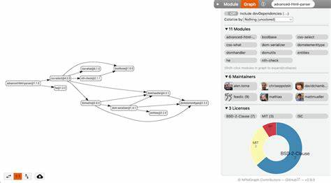

<!DOCTYPE html>
<html lang="en">

<head>
  <meta charset="UTF-8">
  <meta http-equiv="X-UA-Compatible" content="IE=edge">
  <meta name="viewport" content="width=device-width, initial-scale=1.0">
  <title>Document</title>
</head>

<body>
  <div id="container"></div>
  <script>
    function calculateNodeHeight (node) {
      // 计算节点的高度（包括内容高度、边距和内边距）
      const styles = window.getComputedStyle(node);
      const height = node.offsetHeight +
        parseInt(styles.marginTop) + parseInt(styles.marginBottom) +
        parseInt(styles.paddingTop) + parseInt(styles.paddingBottom);
      return height;
    }

    function paginateHtmlString (htmlString, pageHeight) {
      const div = document.createElement('div');
      div.innerHTML = htmlString;

      const paginatedDivs = []; // 存储分页后的 div 元素

      let currentPage = null;
      let currentPageHeight = 0;

      function traverse (node) {
        if (currentPageHeight + calculateNodeHeight(node) > pageHeight) {
          // 超出当前页面高度，创建新的页面
          currentPage = document.createElement('div');
          paginatedDivs.push(currentPage);
          currentPageHeight = 0;
        }

        const clonedNode = node.cloneNode(true); // 深度复制节点

        if (currentPage) {
          currentPage.appendChild(clonedNode);
          currentPageHeight += calculateNodeHeight(clonedNode);
        }

        if (node.children && node.children.length > 0) {
          for (const child of node.children) {
            traverse(child);
          }
        }
      }

      traverse(div);

      const paginatedHtmlStrings = paginatedDivs.map(pageDiv => pageDiv.outerHTML);
      return paginatedHtmlStrings;
    }

    const htmlString = '<div><p>1223223232</p><table><tr><td></td><td></td><td></td></tr></table></div>';
    const pageHeight = 200; // 指定固定高度

    const paginatedHtmlStrings = paginateHtmlString(htmlString, pageHeight);

    // 将分页后的内容直接插入到页面的容器中
    const container = document.getElementById('container'); // 获取容器元素
    for (const pageHtmlString of paginatedHtmlStrings) {
      const pageDiv = document.createElement('div');
      pageDiv.innerHTML = pageHtmlString;
      container.appendChild(pageDiv);
    }
  </script>
</body>

</html>